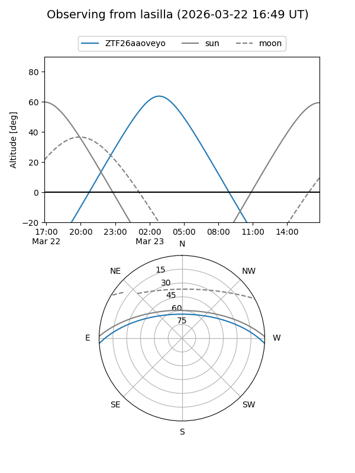
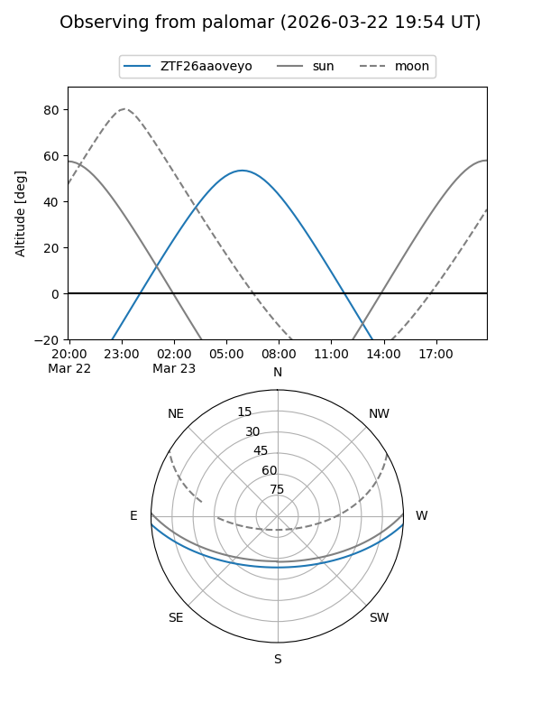

ZTF26aaoveyo
Target ZTF26aaoveyo at 2026-03-23 08:38
Aliases and brokers:
FINK: link
Lasair: link
ALeRCE: link
alt names
ZTF26aaoveyo (ztf,fink_ztf)
Coordinates:
equatorial (ra, dec) = 152.0684,-2.99654
equatorial (HMS+DMS) = 10:08:16.42,-02:59:47.56
galactic (l, b) = (243.8848,+40.46996)
Flags:
Photometry:
last ztfg=17.49
1 ztfg detections
Lightcurve
Visibility


Additional plots